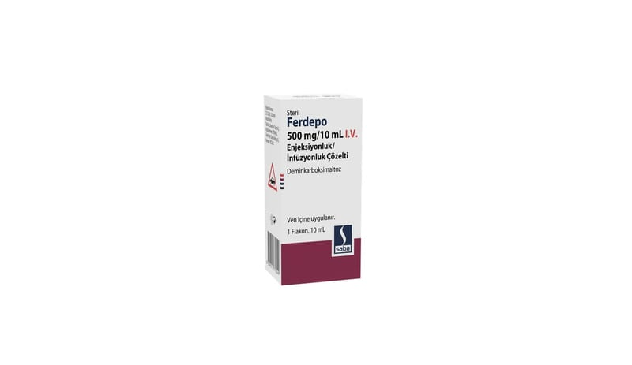

Ferdepo 500 mg/10 mL I.V. Enjeksiyonluk/İnfüzyonluk Çözelti (1 adet)

Ne için kullanılır
KT · Bölüm 1FERDEPO kansızlık (anemi) tedavisinde kullanılan bir ilaçtır. Demirin, ferrik karboksimaltoz olarak adlandırılan bir formunu içerir. Demir, alyuvarlardaki (kırmızı kan hücreleri) hemoglobinin (alyuvarlardaki oksijen taşıyan maddeler) ve miyoglobinin (kas dokusundaki oksijen taşıyan maddeler) oksijen taşıma kapasitesi için gerekli olan çok önemli bir elementtir.
Ayrıca, demir, insan vücudunda yaşamın idame ettirilmesi için gerekli olan birçok başka işlevde de rol oynar.
FERDEPO, bir karton kutu içerisinde, bir adet 10 mL’lik flakon içeren ambalajlarda sunulmaktadır.
FERDEPO, - Mide-bağırsak sisteminden demirin emilmesinde bozulma nedeniyle kansızlık gelişmişse, - Mide-bağırsak sistemindeki şiddetli kanama nedeniyle demir eksikliğine bağlı kansızlık gelişmişse, - Midenin tamamının veya bir kısmının alınması nedeniyle demir eksikliği ve kansızlık gelişmişse, - Demir eksikliğine bağlı kansızlığı olan ve ağız yoluyla alınan demiri tolere edemeyen hastalarda, - Demir eksikliği nedeniyle kansızlık gelişen ve ağız yoluyla alınan demirin yeterli düzeyde etki göstermediği hastalarda, - Doktorunuz, demir depolarınızın hızla doldurulmasının gerektiğine ve bu nedenle demir uygulanmasına karar verdiyse, - Eritropoetin (EPO) (kan yapımını uyaran bir hormon) tedavisi alan diyaliz (kanın temizlenmesi işlemi)e bağımlı olan veya olmayan kronik böbrek yetmezliği hastalarında demir eksikliği varlığında, - Sınıf II ve üzeri kalp yetmezliği olan hastalarda demir eksikliğinde veya demir eksikliğine bağlı ortaya çıkan kansızlıkta kullanılır.
FERDEPO gebeliğin ilk 3 aylık döneminde önerilmemelidir. Gebeliğin ikinci ve üçüncü 3 aylık döneminde ise hekimin zorunlu bulduğu hallerde kullanılmalıdır.
İlacı kullanmadan önce, doktorunuz, ihtiyacınız olan FERDEPO dozunu hesaplamak amacıyla bir kan testi yapacaktır.